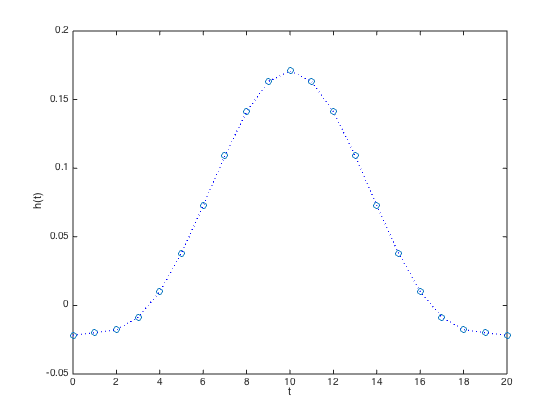
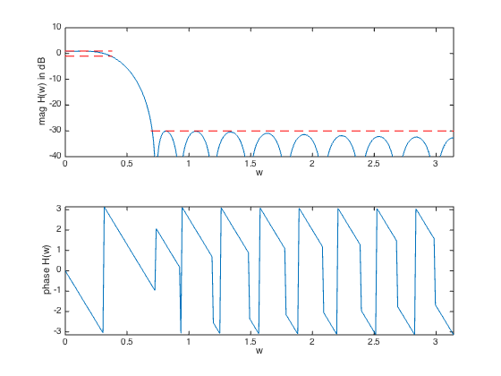

% "Filter design" lecture notes (EE364) by S. Boyd % (figures are generated) % % Designs a linear phase FIR lowpass filter such that it: % - minimizes the transition band width (i.e. minimize w_stop) % - has a constraint on the maximum passband ripple % - has a constraint on the maximum stopband attenuation % % This is a quasiconvex problem and is solved using a bisection. % % minimize w_stop % s.t. 1/delta <= H(w) <= delta for w in the passband % |H(w)| <= atten_level for w in the stopband % % where H is the frequency response function and variable is % the filter impulse response h (and its order/length). % Data is delta (max passband ripple) and atten_level (max stopband % attenuation level). % % Written for CVX by Almir Mutapcic 02/02/06 %******************************************************************** % user's filter specifications %******************************************************************** % starting point for the stopband (needs to be feasible) wstop = 0.24*pi; % stopband start freq (in radians) TOL = 1e-3; % precision to which we should run bisection n = 10; % filter order (2n+1 is the full order) wpass = 0.12*pi; % passband cutoff freq (in radians) delta = 1; % max (+/-) passband ripple in dB atten_level = -30; % stopband attenuation level in dB %******************************************************************** % create optimization parameters %******************************************************************** m = 30*n; % freq samples (rule-of-thumb) w = linspace(0,pi,m); %********************************************************************* % use bisection algorithm to solve the problem %********************************************************************* wstop_bot = wpass; wstop_top = wstop; while( wstop_top - wstop_bot > TOL) % try to find a feasible design for given specs wstop_cur = (wstop_top + wstop_bot)/2; % create optimization matrices (matrix of cosines) A = [ones(m,1) 2*cos(kron(w',[1:n]))]; % passband 0 <= w <= w_pass ind = find((0 <= w) & (w <= wpass)); % passband Ap = A(ind,:); % transition band is not constrained (w_pass <= w <= w_stop) % stopband (w_stop <= w) (this is the changing constraint) ind = find((wstop_cur <= w) & (w <= pi)); % stopband As = A(ind,:); % formulate and solve the feasibility linear-phase lp filter design cvx_begin quiet variable h_cur(n+1,1); % feasibility problem % passband bounds Ap*h_cur <= 10^(delta/20); Ap*h_cur >= 10^(-delta/20); % stopband bounds abs( As*h_cur ) <= 10^(atten_level/20); cvx_end % bisection if strfind(cvx_status,'Solved') % feasible fprintf(1,'Problem is feasible for stopband freq = %3.4f rads\n',wstop_cur); wstop_top = wstop_cur; % construct the full impulse response h = [flipud(h_cur(2:end)); h_cur]; else % not feasible fprintf(1,'Problem is not feasible for stopband freq = %3.4f rads\n',wstop_cur); wstop_bot = wstop_cur; end end wstop = wstop_top; fprintf(1,['\nOptimum stopband frequency for given specs is %3.4f*pi rads\n' ... 'and the minimum transition width is %3.4f*pi radians.\n'],... wstop/pi, (wstop-wpass)/pi); %******************************************************************** % plots %******************************************************************** figure(1) % FIR impulse response plot([0:2*n],h','o',[0:2*n],h','b:') xlabel('t'), ylabel('h(t)') figure(2) % frequency response H = exp(-j*kron(w',[0:2*n]))*h; % magnitude subplot(2,1,1) plot(w,20*log10(abs(H)),... [wstop pi],[atten_level atten_level],'r--',... [0 wpass],[delta delta],'r--',... [0 wpass],[-delta -delta],'r--'); axis([0,pi,-40,10]) xlabel('w'), ylabel('mag H(w) in dB') % phase subplot(2,1,2) plot(w,angle(H)) axis([0,pi,-pi,pi]) xlabel('w'), ylabel('phase H(w)')
Problem is not feasible for stopband freq = 0.5655 rads Problem is not feasible for stopband freq = 0.6597 rads Problem is feasible for stopband freq = 0.7069 rads Problem is not feasible for stopband freq = 0.6833 rads Problem is feasible for stopband freq = 0.6951 rads Problem is not feasible for stopband freq = 0.6892 rads Problem is not feasible for stopband freq = 0.6921 rads Problem is feasible for stopband freq = 0.6936 rads Problem is not feasible for stopband freq = 0.6929 rads Optimum stopband frequency for given specs is 0.2208*pi rads and the minimum transition width is 0.1008*pi radians.
 